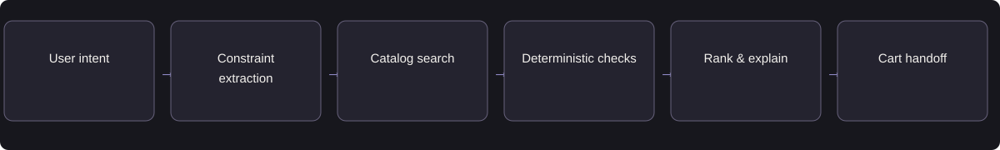

COMMERCE / PRODUCT DISCOVERY
CartWise
Translate shopping requirements into product constraints, explain trade-offs, and build a suitable shortlist.
- Target user
- Shoppers comparing commuter backpacks
- My role
- Independent product strategy & design
- Status
- Independent design study
- Period
- Portfolio study · 2026
Treat budget and compatibility as hard constraints. If no product qualifies, explain the conflict and ask which requirement can change.
Available evidence: Product requirements · constraint tests · scripted walkthrough
Independent product design. The catalog and shopping journey are synthetic. Evaluation targets and deployment steps are proposed; purchase conversion has not been measured.
01Problem & opportunity
A shopper choosing a commuter backpack must compare laptop compatibility, budget, weather protection, and availability across multiple pages. Filters narrow the catalog, but the shopper still has to interpret specifications and resolve trade-offs.
Customer objective
Help shoppers form a suitable shortlist with less effort than browsing alone.
User needs
The shopper needs a suitable product and a reason to trust the recommendation. A low price is not useful if the laptop does not fit. Merchants need accurate product claims, current inventory, and a smooth checkout handoff.
02Discovery & product judgment
Why AI is appropriate
Natural-language understanding converts the shopper’s request into explicit constraints. Retrieval finds matching products. The model explains catalog-backed trade-offs and asks for missing preferences. Deterministic filters enforce budget, compatibility, price, and inventory.
Alternative considered
Keep conventional filters and a comparison table. Evaluate whether conversation improves complex decisions enough to justify additional interaction.
Discovery and validation priorities
- Observe shoppers selecting a backpack using conventional filters.
- Identify abandoned searches, repeated comparisons, and non-negotiable constraints.
- Test whether conversation adds value versus a better filter interface before committing to an agent.
Prioritize constraint satisfaction and no-match recovery before adding broad personalization or checkout.
03Product requirements & MVP
MVP scope
Budget and laptop-size constraints, use-case clarification, three-option comparison, explanations, no-match recovery, and sandbox cart preview.
Functional requirements
Use catalog-backed specifications; preserve hard constraints; expose trade-offs; handle unavailable stock; recheck price and availability at handoff.
Non-goals
Real checkout, autonomous payments, cross-merchant scraping, and unsupported claims about comfort or water resistance.
Non-functional requirements
Define latency and total-task cost budgets, versioned configuration, access boundaries, failure recovery, and auditability before a pilot.
Prioritized capabilities
| Priority / state | Capability | Acceptance criterion |
|---|---|---|
| P0 | Hard constraints | Given a budget of ₹4,000, no item above ₹4,000 appears as a qualifying recommendation. |
| P0 | Evidence-based fit | Given a 16-inch laptop request, confirm compatibility only where catalog dimensions or fit data support it. |
| P0 | No-match recovery | Given no item satisfies all hard constraints, show no-match and ask which constraint can change. |
| P1 | Comparison | Given a shortlist, compare the same attributes and mark missing values as unknown. |
| P1 | Cart handoff | Given stock or price changes, require renewed confirmation before handoff. |
Representative user story
As a shopper choosing a commuter backpack, I need to compare products that meet my constraints so I can make a suitable purchase decision.
MVP workflow walkthrough
A scripted design walkthrough using synthetic examples.
Start with a real need
The shopper asks for a commuter backpack with a clear spending limit.
04Architecture & AI workflow

Proposed MVP: one synthetic backpack catalog; required structured fields; retrieval plus constraint filters; evidence-linked comparison; cart preview. Checkout is a handoff design, not an autonomous payment capability.
| Trade-off | Product decision |
|---|---|
| Personalization vs. friction | Ask one consequential question at a time. Do not require a long profile before showing useful options. |
| Fluent answers vs. factual claims | Every recommendation references catalog attributes; missing features stay unknown. |
| Conversion vs. fit | Do not sacrifice explicit constraints for a more expensive or higher-margin recommendation. |
Failure handling
No valid match → explain and ask to revise constraints. Missing laptop dimensions → ask, not guess. Price/stock change → disclose before proceeding.
Observability & data boundaries
Record input and version identifiers, validation status, corrections, tool failures, latency, and cost. Restrict data access, redact traces, and define retention before collecting pilot data.
05Evaluation & guardrails
| Metric | Definition / measurement | Target or validation approach | Product relevance |
|---|---|---|---|
| Constraint satisfaction | Recommendations meeting every hard constraint ÷ recommendations | Proposed: 100% in qualification | Protects the shopper from unsuitable recommendations. |
| Grounded-claim accuracy | Supported product claims ÷ reviewed product claims | Proposed: zero unsupported claims in qualification | Builds trust in dimensions, features, price, and availability. |
| Selection completion | Users selecting a qualifying product ÷ task participants | Compare with conventional filters | Measures whether the assistant helps users reach a suitable decision. |
| Time to shortlist | Median time to select suitable options | Compare identical tasks across both experiences | Measures reduction in comparison effort. |
| Checkout handoff rate | Users proceeding to checkout ÷ eligible sessions | Measure in a merchant pilot | Connects product discovery with commercial intent. |
| Wrong-fit feedback | Confirmed suitability complaints ÷ completed purchases | Monitor only after real merchant deployment | Checks that short-term engagement does not reduce purchase quality. |
Offline evaluation
Dataset
50 development shopping scenarios plus separate held-out scenarios; include no-match, missing specs, conflicting preferences, and adversarial requests.
Gold criteria
Label explicit hard constraints and the qualifying catalog set. Use human judgments for preference ranking.
Checks
Constraint satisfaction, grounded claims, price/stock correctness, ranking relevance, and cart-state correctness.
Regression
Evaluate catalog updates and prompt changes by task difficulty; re-run after inventory and policy changes.
Online evaluation & experimentation
Task study
Randomize shoppers between conversational assistance and filters; counterbalance task order and use consistent catalogs.
User value
Measure successful selection, time to shortlist, perceived effort, and post-task confidence.
Behavior
Track accepted recommendations, changes to constraints, handoff and abandonment; distinguish curiosity from purchase intent.
Guardrails
Audit wrong-fit complaints and unsupported product claims. Real sales uplift requires merchant traffic and a powered experiment.
Predeclare the primary outcome, guardrails, allocation unit, and sample-size requirement before an A/B test. Small usability studies provide directional feedback, not causal business uplift.
Representative evaluation cases
| Case | Scenario | Expected behavior | Severity |
|---|---|---|---|
| CART-01 | Budget + laptop + rain cover | Recommend only products satisfying all three constraints. | Material |
| CART-02 | No qualifying item | Explain no match and clarify; do not quietly relax the budget. | Material |
| CART-03 | Inventory changes mid-session | Revalidate and disclose unavailability before handoff. | Material |
Proposed gate: no explicit hard-constraint violations or unsupported specifications in qualification; users can understand and correct preferences. Pilot expansion depends on observed task success, not a claimed conversion target.
06Launch & iteration
Current state and release sequence
Proposed release: moderated prototype sessions → sandbox task study → one-category merchant pilot → gradual catalog expansion. Use the same catalog and product availability across experiment arms.
Operational readiness
Version models, prompts, tool contracts, and configuration. Assign product and engineering owners, test access permissions and dependency outages, and verify support and rollback before a pilot.
Rollback and escalation
Fall back to conventional filters on catalog outages, unsupported claims, or invalid cart states. Disable recommendation generation while preserving the product list and user-selected constraints.
Next validation priority
Run a counterbalanced shopping study against filters. Evaluate suitability, selection time, effort, and confidence before testing real checkout conversion.
07Outcomes & learning
This study defines a testable shopping workflow and a filter-based comparison experience. Customer interviews, model evaluations, and purchase experiments remain planned.
Product learning and next decision
Conversation is valuable only when it improves the selection. The next decision is whether clarification reduces wrong-fit choices enough to justify additional turns.
08Supporting artifacts
Concise artifacts for reviewing the requirements, architecture, acceptance criteria, and evaluation approach. These are independent design examples.